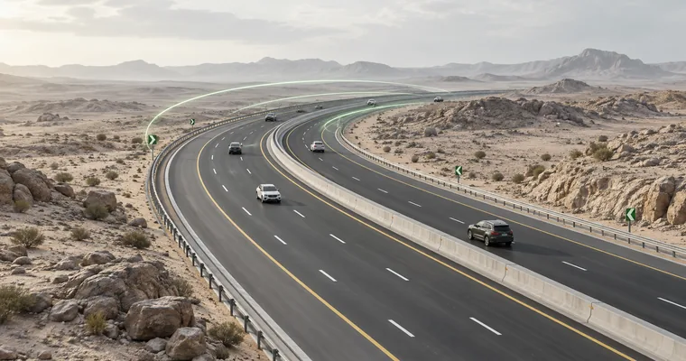

لاحِب
عن الفكرة والاسم والغاية

كودٌ يُعرَف، لا كودٌ يُحفَظ على الرفّ
خمسة وعشرون مجلدًا تصف كيف تُخطَّط طرق المملكة وتُصمَّم وتُبنى وتُصان. «لاحِب» يأخذ هذه المعرفة من صفحاتها التقنية إلى طاولة مسابقة، حيث يُسأل عنها ويُناقَش ويُتذكَّر.
الاسملماذا «لاحِب»؟
اللاحِب في لسان العرب هو الطريقُ الواسعُ الواضحُ المسلوك؛ الطريق الذي لا يضلّ سالكه لأن آثار السابقين بيّنة عليه.
وهذا بالضبط ما يصنعه الكود للطريق: يجعله بيّنًا لمن يخططه ويصممه ويبنيه ويصونه. فاختير الاسم ليقول إن الغاية ليست أن نحفظ نصًّا، بل أن يصير الطريق الصحيح واضحًا لكل من يعمل عليه.
من المعاجملَحَبَ الطريقُ: وَضَحَ. وطريقٌ لاحِبٌ: بيِّنٌ واسعٌ منقاد.
الفكرةما الذي يفعله لاحِب؟
مسابقة بين فريقين، أسئلتها كلّها مستخرجة من مجلدات كود الطرق السعودي الخمسة والعشرين، وكل سؤال منها مرفق بمرجعه: المجلد والبند والصفحة.
يختار الفريقان مواضيعهما من خمسة وعشرين موضوعًا، موضوع لكل مجلد، ثم يتنافسان على لوحة من ثلاث رتب تتدرج من المعلومة التأسيسية إلى القيمة الرقمية الدقيقة. صاحب الدور يجيب أولًا، فإن أخطأ انتقلت الفرصة إلى خصمه. ولكل فريق ثلاث وسائل مساعدة يستعملها مرة واحدة في الجولة. وحين تُكشف الإجابة تظهر معها «معلومة تُثبّت» تشرح لماذا وُضع الاشتراط أصلًا، فيخرج اللاعب من السؤال وقد فهم لا حفظ.
الغايةالهدف الأسمى
أن يتحوّل كود الطرق السعودي من وثيقة مرجعية يُرجع إليها عند الحاجة، إلى معرفة حيّة يحملها المهندس والفنّي والمهتم في ذهنه قبل أن يحملها في ملفّاته.
الكود لم يُكتب ليُقرأ مرة ويُنسى؛ كُتب لتُبنى عليه طرق أكثر أمانًا وأطول عمرًا وأقل كلفة. لكن المعرفة التقنية حين تبقى حبيسة آلاف الصفحات تصل إلى قلّة، ويبقى الباقون يعملون بما اعتادوه. المسابقة تكسر هذا الحاجز: تجعل الاطّلاع على الكود أمرًا ممتعًا وتنافسيًّا، وتربط كل معلومة بموضعها في النص فتغرس عادة الرجوع إلى المرجع لا إلى الظن.
والغاية الأبعد أن ينعكس ذلك على الطريق نفسه: مهندس يعرف لماذا حُدد هذا الميل، ومفتّش يعرف متى يُعاد فحص هذا العنصر، ومخطّط يعرف ما الذي يسبق رسم المسار. حين تصبح هذه المعرفة مشتركة، يصبح الطريق «لاحبًا» بحق: واضحًا لكل من يعمل عليه، وآمنًا لكل من يسلكه.
المبادئما الذي نلتزم به
المرجع أولًا
لا سؤال بلا مرجع. كل إجابة تُردّ إلى مجلد وبند وصفحة، وعند أي خلاف فالحَكم هو نص الكود نفسه لا ذاكرة أحد.
الفهم قبل الحفظ
مع كل إجابة معلومةٌ تشرح السبب. الرقم وحده يُنسى، أما الرقم مع علّته فيبقى.
البساطة
صفحة واحدة تُفتح بلا تنصيب ولا خادم ولا اتصال، على شاشة العرض أو الجوال، في قاعة تدريب أو مكتب أو بيت.
احترام الهوية الرسمية
يستلهم العمل ألوان الهيئة العامة للطرق ولغتها البصرية، ولا يستخدم شعارها ولا أيًّا من عناصره. هو عمل توعوي مستقل لا يتحدث باسم أي جهة.
خارج المسابقةللتحضير والمراجعة
إلى جانب المسابقة، تتيح بطاقات المذاكرة مراجعة البنك كاملًا فرديًّا: سؤال يُقلب فيظهر جوابه ومرجعه، أو جواب تخمّن سؤاله. تُصفّى بالمجلد والرتبة، وتُحفظ علامات «أعرفها» و«أراجعها لاحقًا» ليعود المتدرب إلى ما يحتاج إليه فقط.